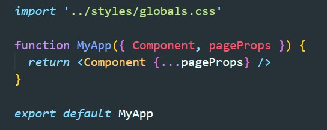

При создании проекта в папке pages был создан файл _app.js с вот таким содержимым:
Этот компонент нам надо переписать, добавив к нему тег style с атрибутами jsx и global. в обратных кавычкаъ мы указываем глобальные стили CSS
Так же мы можем в корне проекта создать папку styles, внутри нее создать файл main.css. В этом файле мы прописываем стили/ Все что остается, это импортировать это файл в файле _app.js
В папке styles создаем файл который называем с использованием module. например main.module.css
Пишем в нем классы со стилями почле чего импортируем в компоненте этотфайл
Что бы стили применились, в JSX применяем классы
Для того что бы мы могли работать с SASS в консоле вводим команду
npm install sassПосле этого переименовываем файлы из CSS в SCSS и все работает